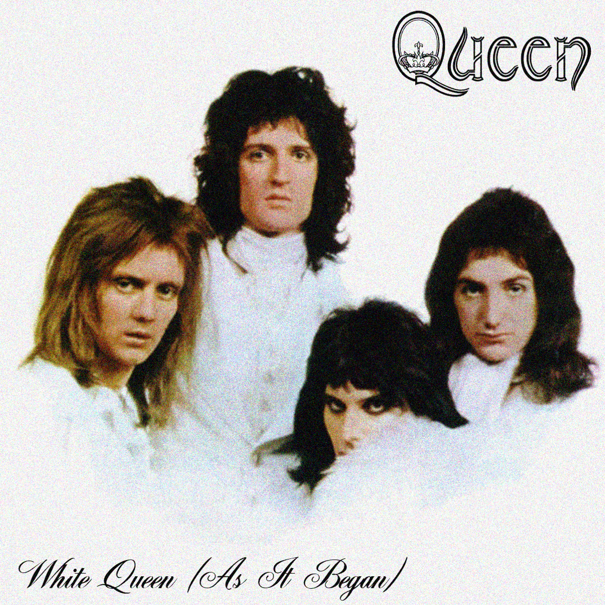

A música "White Queen", que possui o subtítulo "As It Began", é a terceira faixa do segundo álbum da banda Queen. Composta pelo guitarrista Brian May, a canção foi inspirada principalmente por um antigo amor dos tempos de universidade. Na letra, o eu lírico descreve uma personagem chamada "White Queen". Toda a narrativa da música assemelha-se a uma trova, um poema de amor que parece não ser correspondido. A imagem abaixo representa o lado branco do álbum "Queen II", no qual essa música está incluída.
O álbum também possuí outras incríveis músicas, como as que estão listadas a seguir.
Além das músicas do álbum Queen II, os grandes hits da banda Queen também são notórios, confira a lista abaixo.